This report presents the implementation and analysis of the assignment tasks related to Hebbian learning, Oja's rule, principal component extraction, and Spike-Timing Dependent Plasticity (STDP). The work is organized exactly by assignment tasks and evaluated with emphasis on:
The report includes only essential code logic and focuses primarily on method, outputs, and interpretation.
Implement the classical Hebbian update on correlated 2D data and demonstrate instability of the weight dynamics.
Basic Hebbian update used:
Minimal implementation idea:
for x in X:
y = np.dot(w, x)
w += eta * y * xDataset shape: (200, 2)
Empirical covariance matrix:
[[2.95632304 2.3439734 ]
[2.3439734 1.92483448]]
Basic Hebbian final alignment: angle=nan deg, |cosine|=nan
Final ||w||: nan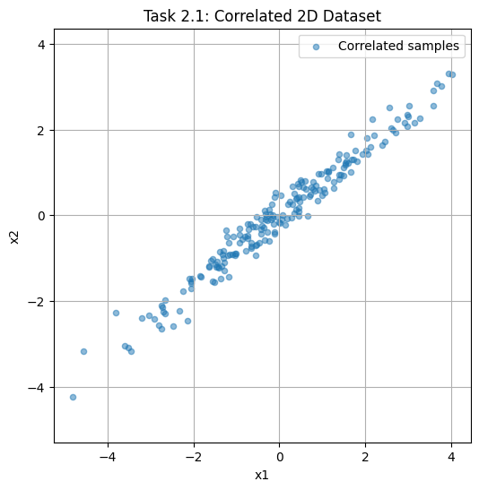
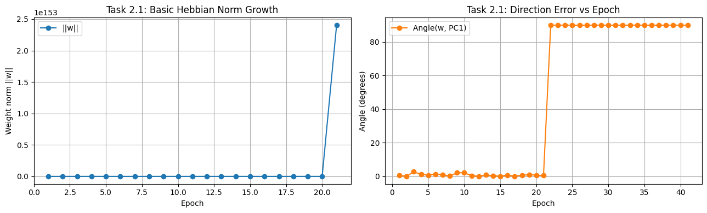
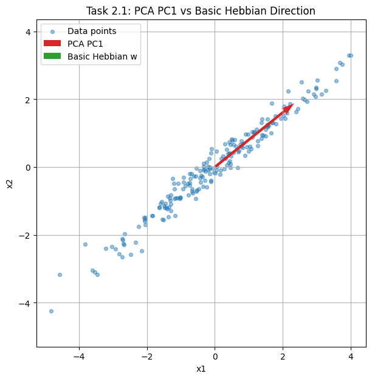
The run diverged numerically (nan), which is consistent with the expected instability of unconstrained Hebbian growth on correlated inputs. Since there is no normalization/competition term, weight norm can blow up, and direction comparison with true PC becomes invalid. This directly supports the assignment requirement to show unstable behavior and lack of reliable principal-component convergence.
Implement Oja's rule and verify convergence toward the first principal component obtained from sklearn PCA.
Oja update used:
Equivalent decomposition:
The second term acts as normalization/stabilization.
Minimal implementation idea:
for x in X:
y = np.dot(w, x)
w += eta * y * (x - y * w)Oja final alignment: angle=0.4779 deg, |cosine|=0.999965
Final ||w|| before final unit-normalization (last epoch): 1.0001874864718119
Comparison Summary
------------------
Basic Hebbian: final ||w|| = nan, final angle to PC1 = nan deg
Oja's Rule : final ||w|| ~ 1.000000 (unit), final angle to PC1 = 0.4779 deg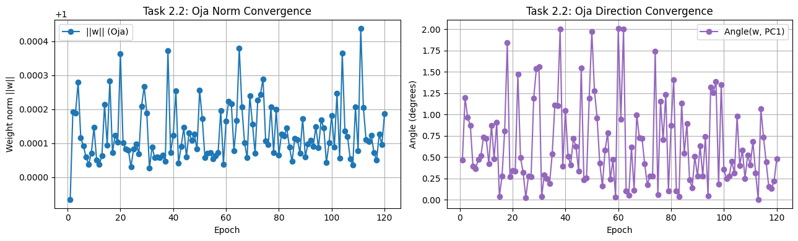
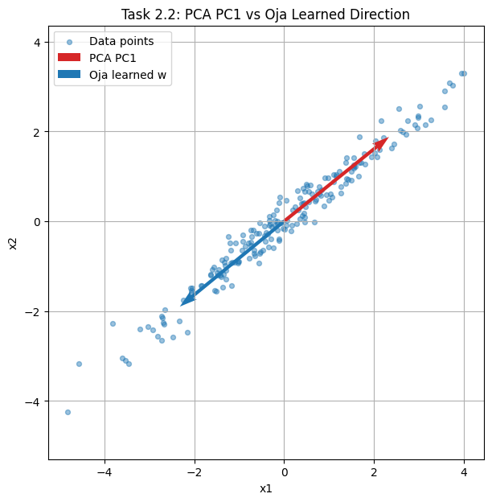
The very small angle to PCA PC1 (0.4779°) and unit-scale norm confirm stable convergence to the dominant principal direction. This result validates Oja's rule as a stable unsupervised PCA-like learner.
Oja's rule preserves the Hebbian correlation term but augments it with a local stabilizing term proportional to \(y^2w\). Therefore, it is a modified Hebbian rule (Neo-Hebbian), not purely classical Hebbian.
Learn first 10 principal directions from 10,000 random 8×8 patches and analyze visual structure of learned weights.
olivetti_faces.Essential multi-component logic:
for i in range(n_components):
w = ojas_rule(residual_X)
components.append(w)
residual_X = residual_X - np.outer(residual_X @ w, w)Patch source: olivetti_faces
Patch matrix shape: (10000, 64)
Learned components shape: (10, 64)
Mean similarity over 10 components: 0.888234999486834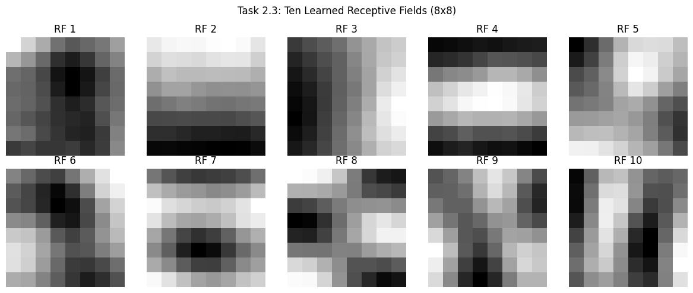
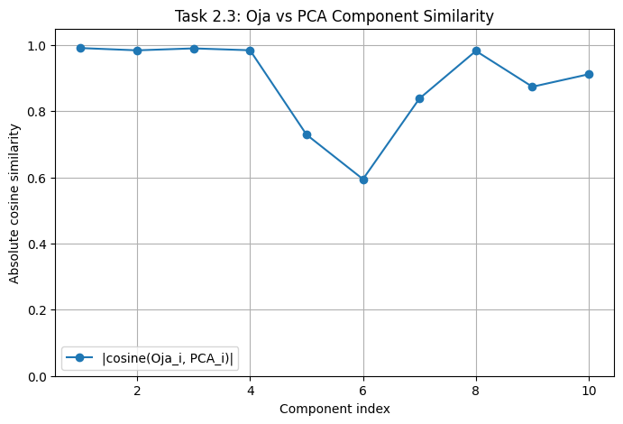
The learned components show oriented and contrast-sensitive structures typical of natural-image statistics. Quantitatively, the high mean cosine similarity (0.8882) between Oja-learned and PCA components supports the expected Hebbian->Oja->PCA linkage. Qualitatively, several filters are edge-like and resemble Gabor-like receptive-field behavior often discussed for V1.
Standard Hebbian rule:
Differential Hebbian rule:
Difference: standard Hebbian uses instantaneous co-activation; differential Hebbian emphasizes temporal co-variation (changes), so it is better aligned with predictive timing relationships.
Define timing difference \(\Delta t = t{post} - t{pre}\). A standard pair-based model is:
So if pre-synaptic firing precedes post-synaptic firing, potentiation occurs; for reverse order, depression occurs.
A Mexican-hat correlation profile (local excitation, surround inhibition) encourages structured positive and negative receptive subregions under Hebbian-like adaptation. This supports emergence of orientation-selective filters in Linsker-style self-organization models.
Simulate STDP using required parameters and compare random, causal, and anti-causal timing conditions.
if dt > 0:
dw = A_plus * exp(-abs(dt)/tau_plus)
elif dt < 0:
dw = -A_minus * exp(-abs(dt)/tau_minus)Random case final weight: 0.9994316929072757
Random case pre spikes: 10 post spikes: 11
Causal final weight : 1.0
Anti-causal final weight: 0.0
Expected trend check: causal > anti-causal (usually true under standard STDP parameters).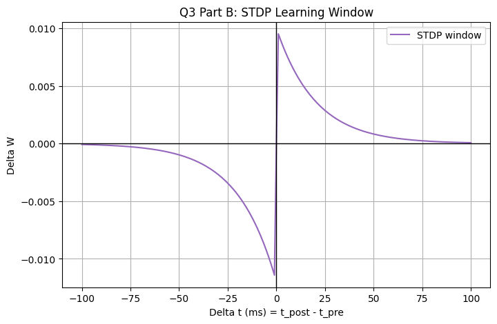
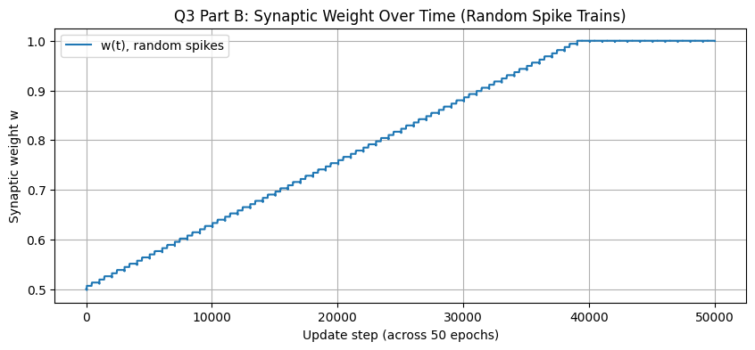
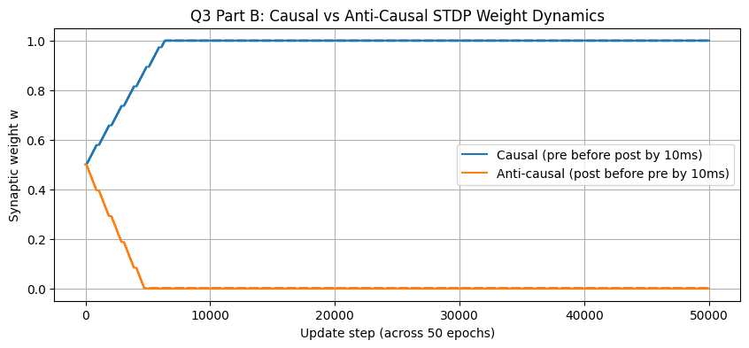
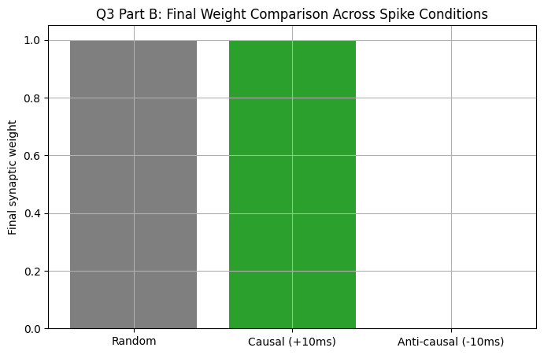
The simulation outcome is consistent with STDP theory:
This directly demonstrates temporal Hebbian plasticity and its connection to differential Hebbian learning principles.
| Section | Key Quantitative Result | Conclusion |
|---|---|---|
| Q1 Task 2.1 | Hebbian norm(w) and angle became nan | Unstable / diverging dynamics |
| Q1 Task 2.2 | Oja vs PC1 angle = 0.4779° | Accurate PCA-direction recovery |
| Q1 Task 2.3 | Mean Oja-PCA similarity = 0.8882 | Strong alignment with PCA components |
| Q3 Part B | Causal final \(w=1.0\), Anti-causal final \(w=0.0\) | Correct LTP/LTD timing behavior |